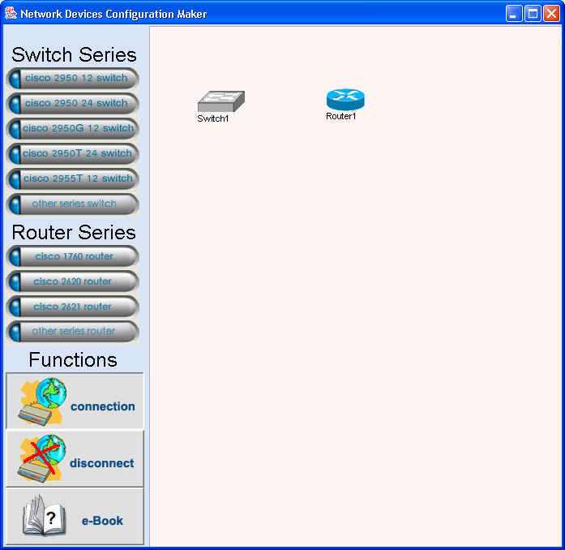
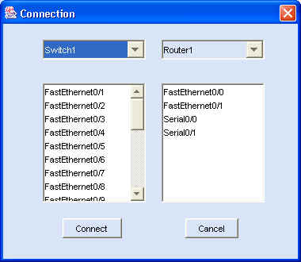
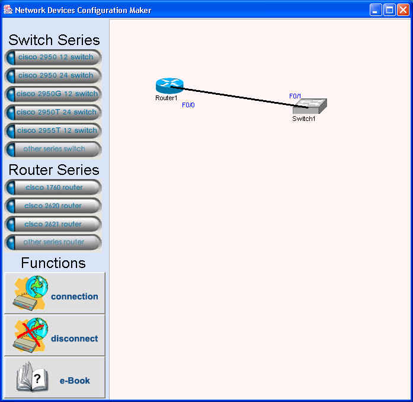

การใช้งานโปรแกรมในการออกแบบเครือข่าย การคอนฟิกสวิตช์ การคอนฟิกเราเตอร์ การสร้างค่าติดตั้งสวิตช์และเราเตอร์ การนำค่าติดตั้งที่ได้ไปใช้งาน
การใช้งานโปรแกรมในการออกแบบเครือข่าย
โปรแกรมสร้างติดตั้งอุปกรณ์เครือข่ายสามารถใช้ในการออกแบบเครือข่ายเพื่อให้ความสะดวกแก่ผู้ออกแบบและดูแลเครือข่ายโดยมีขั้นตอนดังนี้ |
ขั้นที่ 1 |
เปิดโปรแกรมสร้างค่าติดตั้งอุปกรณ์เครือข่าย เลือกอุปกรณ์สวิตช์หรือเราเตอร์ที่ต้องการแล้วเลือกปุ่ม Connection เพื่อสร้างการเชื่อมต่อระหว่างสวิตช์หรือเราเตอร์ ดังรูปที่ 1 |

รูปที่ 1 แสดงการออกแบบเครือข่ายโดยการสร้างสวิตช์หรือเราเตอร์
ขั้นที่ 2 |
เลือกอินเทอร์เฟสของสวิตช์หรือเราเตอร์ที่ต้องการสร้างการเชื่อมต่อ เลือกปุ่ม Connect ดังรูปที่ 2 จะได้การรูป แสดงการเชื่อมต่อระหว่างสวิตช์และเราเตอร์ ดังรูปที่ 3 |

รูปที่ 2 แสดงการสร้างการเชื่อมต่อระหว่างอุปกรณ์เครือข่าย

รูปที่ 3 แสดงผลจากการสร้างการเชื่อมต่อระหว่างอุปกรณ์เครือข่าย